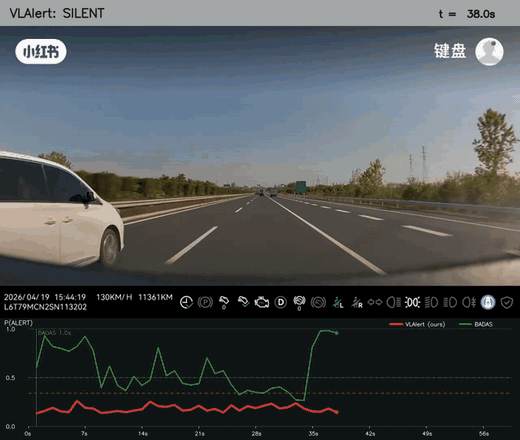
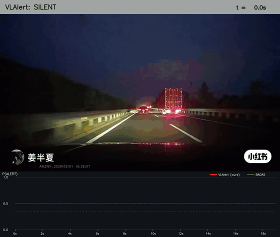
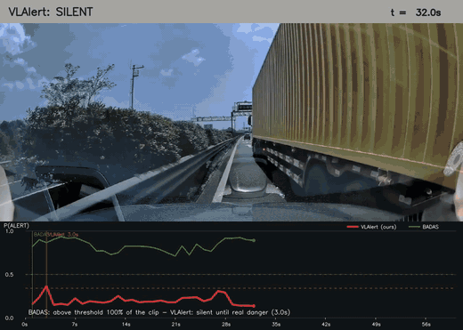
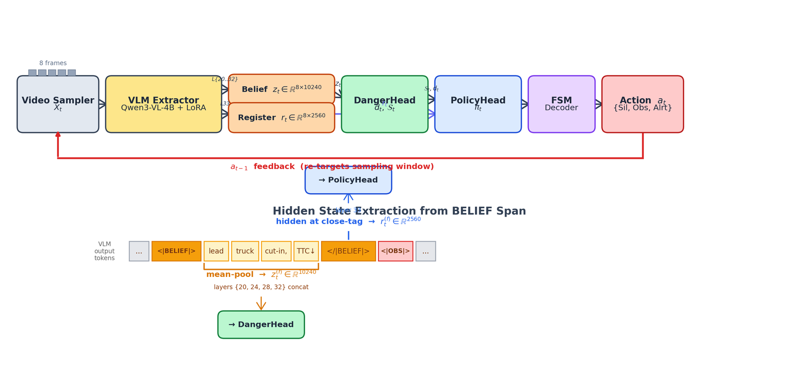
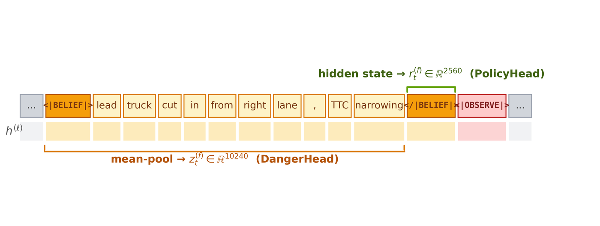
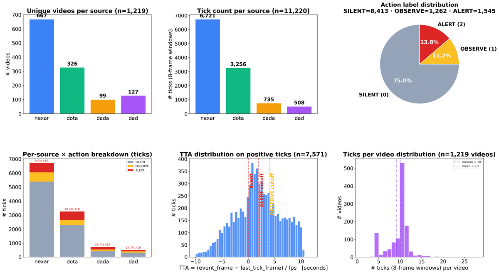

VLAlert-Bench: A Unified Benchmark for Driving-Alert Decision Making



A unified per-tick benchmark for deciding when a driving system should stay SILENT, OBSERVE, or ALERT.
Overview
VLAlert-Bench integrates six driving-event datasets into a single per-tick prediction task with three actions — SILENT, OBSERVE, and ALERT. At each one-second tick a model sees the last 8 frames and predicts the appropriate alert action. The benchmark provides 13,534 videos across five splits, 192,892 one-second labeled ticks, per-frame action labels, and split manifests, and hosts the full ADAS-TO-Critic mp4 corpus directly. Source datasets include Nexar Collision, DoTA, DAD, DADA-2000, ADAS-TO-Critic, and the Kaggle Accident set. Released under CC-BY-4.0.

Model architecture for per-tick alert decisions.

Belief spans over the SILENT / OBSERVE / ALERT states.

Label distribution across the validation splits.
Demos
Per-tick alert decisions on real driving-event footage.
BibTeX
@inproceedings{wang2026vlalert,
title = {VLAlert-Bench: A Unified Benchmark for Driving-Alert Decision Making},
author = {Wang, Yuhang and Zhou, Hao},
booktitle = {Conference on Robot Learning (CoRL)},
year = {2026},
url = {https://huggingface.co/datasets/HenryYHW/VLAlert}
}